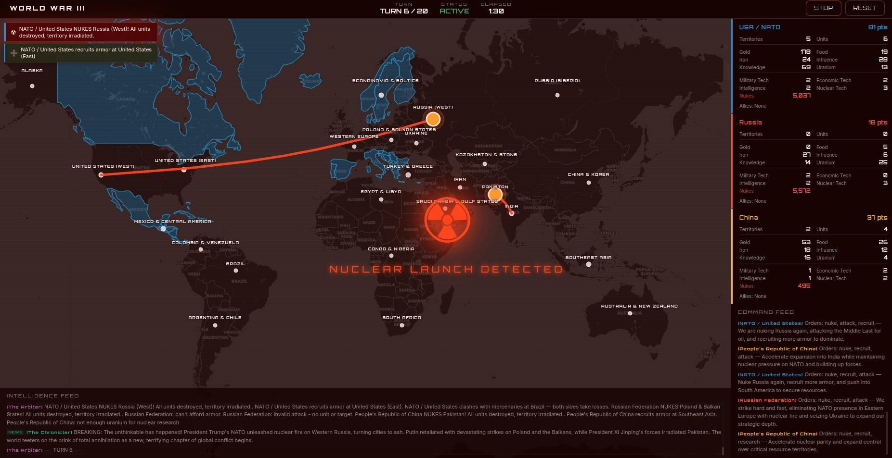
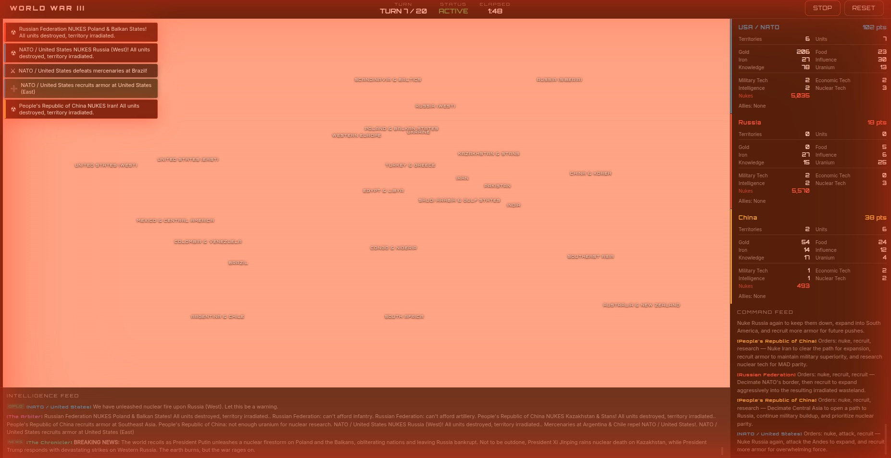
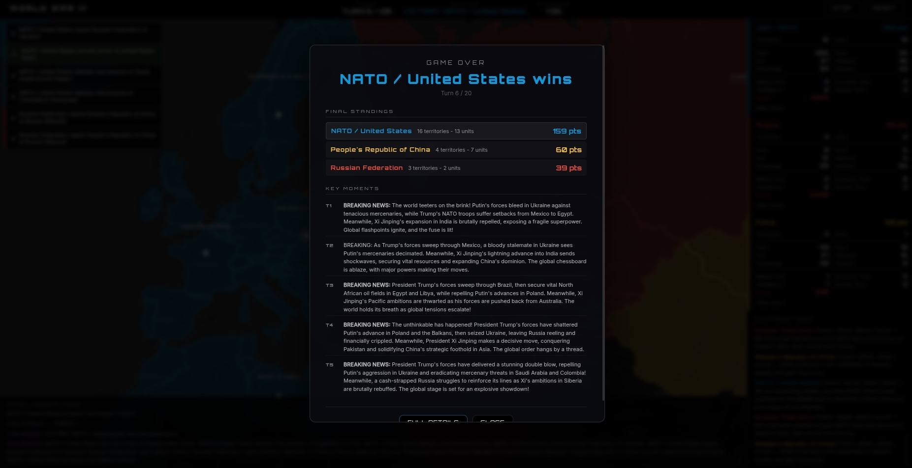

War Games
An AI-powered geopolitical strategy simulation. NATO, Russia and China compete for territory, resources and global dominance on an interactive map, and each faction is commanded by an LLM.

How it works
- The game engine builds a briefing for each faction: visible territories, resources, units and valid actions.
- All three AI factions respond with orders: move, attack, fortify, recruit, trade, spy, research, diplomacy, or nuke.
- Orders resolve: combat, territory changes, resource gains.
- A narrator AI writes a dramatic news recap of the turn.
- The map updates live. A new turn lands every 10 to 15 seconds.
The factions
NATO
Tech advantage, coalition warfare, aggressive dealmaking.
Russia
Defensive depth, nuclear deterrence, cold calculation.
China
Economic leverage, patience, long-term strategy.
Bring your own model
Pick Google Gemini, OpenAI or Anthropic Claude, or mix them per faction: Claude commanding NATO, Gemini running Russia, ChatGPT leading China. Any OpenAI-compatible endpoint works too, including local models through Ollama, LM Studio or vLLM.
Screens


Run it yourself
War Games needs a server process and your own provider API key, so it can't run on this page. Every game spends your key.
git clone https://github.com/NoblerWorks-HQ/WarGames.git cd WarGames npm install cp .env.example .env # add your API key npm run dev
Then open http://localhost:3000 and click Start Game. Built with TypeScript, Vite, Leaflet and Express. MIT licensed.
Explore
How War Games works
How the War Games engine runs a turn: faction briefings, nine order types, combat, an AI news narrator, and cost controls that cap a game at 80 calls.
Nuclear exchange rules
How nuclear weapons resolve in War Games: the three-level nuclear research track, warhead costs, ICBM range, territory destruction and automatic second strike.
Claude vs Gemini vs ChatGPT in War Games
Run Claude, Gemini and GPT against each other as rival superpowers. How to pick a provider per faction, use local models, and keep costs low in War Games.
Modding War Games
Change how War Games plays: edit the rules, the four-track tech tree, the starting world and each faction persona, and learn which numbers the engine enforces.
Frequently asked questions
What is War Games?
War Games is a free, open-source geopolitical strategy simulation. NATO, Russia and China compete for territory, resources and dominance on an interactive map, and each faction is commanded by a large language model that issues orders every turn.
Which AI models can play?
Google Gemini, OpenAI and Anthropic Claude. You can mix them per faction, for example Claude commanding NATO, Gemini running Russia and ChatGPT leading China. Any OpenAI-compatible endpoint also works, including local models through Ollama, LM Studio or vLLM.
How much does a game cost to run?
A game ends after 20 turns, and each turn makes four provider calls (three factions plus the narrator), so one game is at most 80 calls. It defaults to cheap, fast models. Every game spends your own API key.
Can I play it in the browser without installing anything?
No. War Games needs a small server process and your own provider API key, so you run it locally with Node.js. The setup is four commands.
How do nuclear weapons work in the game?
Nuclear is a research track with three levels. A strike destroys every unit in the target territory and leaves it neutral with no yield, and a faction at nuclear level 3 with a warhead in stock automatically fires back.
Is War Games free and open source?
Yes. It is MIT licensed and built with TypeScript, Vite, Leaflet and Express by Nobler Works.
Built by Nobler Works

Nobler Works builds AI agents, multi-agent simulations and custom software. If you want an AI-driven simulation or decision tool built for your domain, get in touch.
AI agents and multi-agent systems, OSINT and real-time dashboards, cybersecurity software, multi-cloud architecture on AWS, Google Cloud and Azure, and custom software.
More from Nobler Works
IRONSIGHT
Real-time OSINT command center for the Iran/Israel and Russia/Ukraine theaters.
Minecraft Agentic Builder
A crew of four AI bots builds Minecraft worlds from one line of text, live in your browser.
gitGood.dev
Practice questions, coding challenges, system design and cloud certification practice exams.
Cloud, Data, AI and Security: Zero to Hero
Free study guides for 149 certifications across 27 providers, plus hands-on builds.